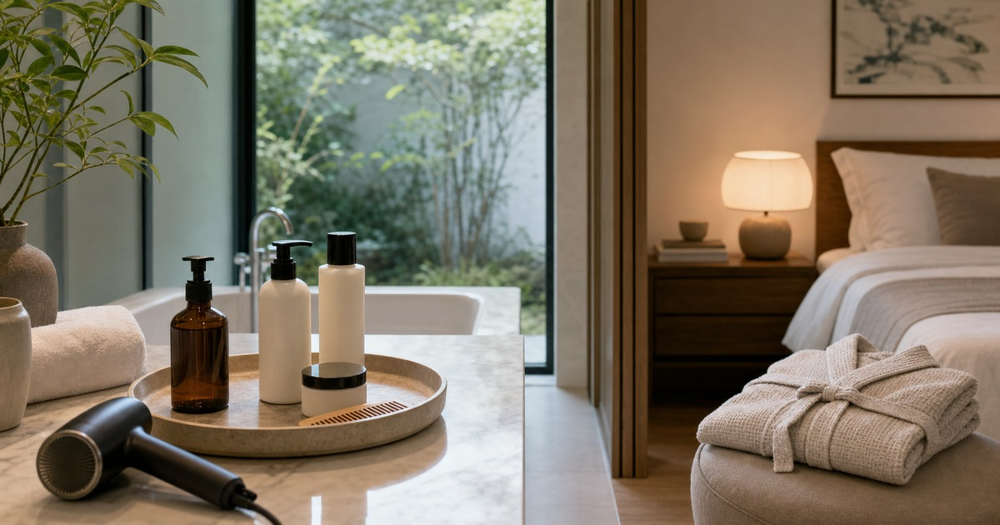

保養流程越簡單越要選對：極簡保養、髮品與日夜照護清單
把保養和髮品拆成早晨、洗後與夜間三段，讓流程簡單但不隨便。

保養流程越簡單，越需要知道每一步在做什麼。早晨要清爽、夜間要穩定，洗後髮品要好吹整，浴室收納也要讓產品看得見、拿得到。與其追逐複雜步驟，不如建立一套真的會每天完成的日夜節奏。
早晨流程只保留必要步驟
早晨保養的任務，是讓肌膚和妝容準備好面對一天，而不是完成所有保養願望。清潔、保濕、防曬或妝前準備，依個人習慣簡化即可。
如果產品太多，最容易發生的是每一瓶都用一點，卻沒有任何一步穩定持續。先固定少數品項，觀察一段時間再調整。
如果你經常出差或健身，建議另外準備一組小容量旅行包。它不必完整，只要能支撐清潔、保濕和洗後整理，回家後再回到日常流程。
- 清潔後先看膚況。
- 保濕和防曬依個人需求安排。
- 新產品不要一次加入太多。
髮品要配合洗後動線
髮品最容易被買錯，是因為沒有想清楚洗後會不會使用。免沖洗、造型、護髮或頭皮相關品項，都要放在吹風機、毛巾和梳子附近，才不會被遺忘。
若早上時間短，前一晚的吹整和收納更重要。把梳子、髮品、髮圈放在同一個區域，隔天就不必在浴室和臥室來回找。
頭髮和臉部用品也不一定要放在一起。把髮品靠近吹風機，保養品靠近鏡子，使用動作會自然很多，也更容易持續。
- 洗後會用的放浴室出口。
- 造型品放梳妝台或外出區。
- 開封日期明顯標示。
Elite 嚴選
日夜產品不要互相搶位置
早晨用品和夜間用品最好分開。早晨重視速度與服貼，夜間重視穩定與舒適；把兩者混在同一個托盤，反而容易拿錯或重複使用。
OBHL 極簡保養、MEDUSA、Make Friends、ENIE 雅如詩、LOYE 樂妍與 IRIYA，可從保養、髮品與日常美妝照護方向延伸。涉及成分、頭皮、肌膚或敏感狀況時，請以商品標示和個人狀況保守評估。
想送保養或髮品時，最好選擇對方已熟悉的品類或較低敏感度的小物，不要把高濃度、強功能感產品當成驚喜，對方也比較容易自然用進日常。
浴室收納要防潮，也要防過期
浴室潮濕，產品如果長期堆在角落，容易忘記開封時間和使用狀態。透明盒、分層架和開封貼紙，比漂亮瓶罐更能維持流程。
若某瓶產品連續兩週沒有被使用，就可以移到觀察區。真正適合自己的流程，不應該每天都像在翻庫存。
日夜流程也可以用顏色或托盤區分。早晨托盤放清爽、快速、出門前會用的品項；夜間托盤放洗後、吹整後或睡前會用的品項，視覺上清楚，手就不容易拿錯。
- 常用品放視線高度。
- 備品不要和開封品混放。
- 旅行小樣定期清掉。
簡單流程也需要停損
任何產品只要讓肌膚、頭皮或眼周明顯不適，就不該為了用完而硬撐。保養和髮品都是生活用品，不是越刺激越有效。
本文只作一般生活整理，不宣稱抗老、修復、改善膚況或治療效果；若有皮膚、頭皮或過敏問題，請諮詢合格專業人員。
如果家裡浴室潮濕，保養品不一定都適合長期放浴室。可以把備品移到乾燥櫃位，只留下當週會用的瓶罐，減少受潮與重複購買，也讓台面維持清爽。
同主題品牌參考
FAQ
這篇文章適合直接照單購買嗎？
不建議。每個家庭、通勤路線、身形、膚況或空間條件都不同，請先用文中的順序盤點自己的使用情境，再回到商品頁確認規格。
商品價格、活動或庫存可以以本文為準嗎？
不可以。價格、活動、庫存、規格、尺寸與配送條件都可能變動，請以下單前看到的商品頁或店家頁公告為準。
涉及保養、照護、兒童或健康用品時要注意什麼？
請把本文視為一般生活整理與選購情境參考；若涉及健康、照護、皮膚、兒童食用或輔具使用，應優先看商品標示並諮詢合格專業人員。
下一步建議
先把早晨、洗後與夜間用品分區，再依實際使用頻率補保養與髮品。
重要警語
本文僅供一般保養與生活整理參考，不構成醫療、皮膚治療或個人化建議；若有不適請諮詢合格專業人員。
本文含品牌／商品導購連結；若你透過部分商品連結前往選購，Elite Fashion 可能取得合作收益。本文仍以編輯判斷與使用情境整理為主，價格、規格、活動與庫存請以商品頁公告為準。